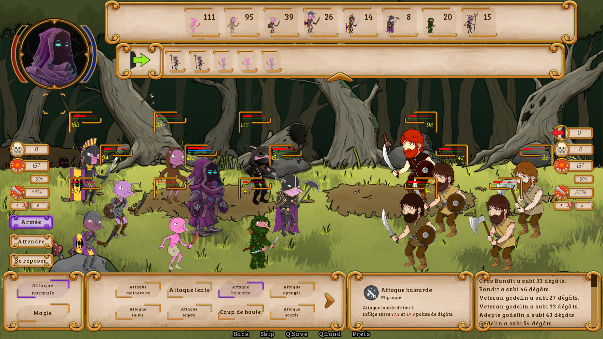
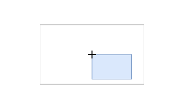
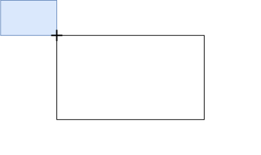
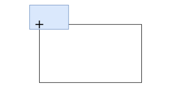
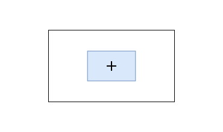

-define e = Character('Eileen', color="#c8ffc8")
+define charly = Character('Charly', color="#c8ffc8")
label start:
- e "Vous venez de créer un nouveau jeu Ren'Py."
- e "Après avoir ajouté une histoire, des images et de la musique, vous pourrez le présenter au monde entier !"
+ charly "Bonjour"
+ "Vous regardez autour de vous sans voir personne"
returnCréer des jeux avec Ren 'Py
Le moteur Ren’Py
Ren’Py est un moteur de jeu spécialisé pour la création de Visual Novel
Téléchargement
Moteur de jeu : https://www.renpy.org/latest.html
Que peut-on faire avec Ren’Py ?
Des jeux d’horreur

Des jeux de romance

Des combats
 |  |
 |  |
Tout simplement des jeux
 |  |
 |  |
Créer un nouveau jeu
Lancer l’executable Ren’Py
Cliquer sur “Créer un nouveau projet”
Confirmer la langue utilisée
Saisir le nom du projet
Choisir les dimensions du jeu
Choisir le thème de couleur du jeu
Importer les assets du jeu dans
game/
Configurer l’éditeur utilisé
Aller dans “Préférences”
Sélectionner le répertoire que Ren’Py devrait utiliser pour les nouveaux projets
Cliquer sur “Editeur de texte”
Sélectionner l’éditeur à utiliser
Structure d’un nouveau jeu
Organiser son projet
Composants d’un jeu
Labels
Images
Choix
Écrans
Styles
Transform
Les labels
Les images
+image town = "images/backgrounds/town.jpg"
+image charly = "images/characters/charly_base.png"
+image charly smiling = "images/characters/charly_smiling.png"
define charly = Character('Charly', color="#c8ffc8")
label start:
+ scene town
charly "Bonjour"
"Vous regardez autour de vous sans voir personne"
+ show charly at center with moveinbottom
+
+ charly "Bonjour !"
+ show charly smiling
+ charly "Je suis cool, hein ?"
returnLes choix
Les choix donnent des options au joueur.
charly "Je suis cool, hein ?"
+ menu:
+ "Oui":
+ charly "Je le savais !"
+ "Non":
+ show charly -smiling
+ "Oh..."
+ charly "Je me demandais, tu as vu Michelle ?"
returnLes écrans
Les écrans permettent des interactions poussées.
screen choice(items):
style_prefix "choice"
vbox:
for i in items:
textbutton i.caption action i.actionLes styles
Les styles permettent de réutiliser des règles d’affichage et de les généraliser.
style choice_vbox is vbox
style choice_button is button
style choice_button_text is button_text
style choice_vbox:
xalign 0.5
ypos 405
yanchor 0.5
spacing gui.choice_spacingLes transform
Les transform permettent de modifier et d’animer des images.
+transform middle():
+ align (0.5, 0.5)
+
label start:
scene town
charly "Bonjour"
"Vous regardez autour de vous sans voir personne"
- show charly at center with moveinbottom
+ show charly at middle with moveinbottomLe positionnement dans Ren’Py
La position
pos (0., 0.)  | pos (0.5, 0.5)  |
pos (1., 1.)  | pos (1/4., 4/5.)  |
L’ancre
anchor (0., 0.) | anchor (0.5, 0.5)  |
anchor (1., 1.)  | anchor (1/4., 4/5.)  |
L’alignement
align (0., 0.) | align (0.5, 0.5)  |
align (1., 1.)  | align (1/4., 4/5.)  |
Créer un jeu
Passer d’un label à l’autre
charly "Je me demandais, tu as vu Michelle ?"
+ jump chapitre1
- return
+
+label chapitre1:
+ charly "J'ai perdu Michelle de vue depuis hier."
+ charly "Elle n'est ni à la maison, ni au jardin."Appeler des labels
label chapitre1:
charly "J'ai perdu Michelle de vue depuis hier."
charly "Elle n'est ni à la maison, ni au jardin."
+ charly "Je revenais de l'étang quand... ah, l'étang..."
+ call jeu_poisson
+ charly "Quoi qu'il en soit... pourrais-tu m'aider ?"
+
+label jeu_poisson:
+ charly "Quel est le nom de ce poisson déjà ?"
+ returnDemander des valeurs à l’utilisateur
+default jeu_poisson_nom_poisson = ""
+image objet_truite = "images/objets/truite.png"
label jeu_poisson:
charly "Quel est le nom de ce poisson déjà ?"
+ show objet_truite
+ $ jeu_poisson_nom_poisson = renpy.input("")
returnFaire subir au joueur les conséquences de ses décisions
label jeu_poisson:
charly "Quel est le nom de ce poisson déjà ?"
show objet_truite
$ jeu_poisson_nom_poisson = renpy.input()
+ if 'truite' != jeu_poisson_nom_poisson:
+ charly "Je n'en suis pas si sûr..."
+ else:
+ charly "Oh oui, c'est ça !"
returnUtiliser des variables dans le texte
label jeu_poisson:
charly "Quel est le nom de ce poisson déjà ?"
show objet_truite
$ jeu_poisson_nom_poisson = renpy.input("")
if 'truite' != jeu_poisson_nom_poisson:
- charly "Je n'en suis pas si sûr..."
+ charly "[jeu_poisson_nom_poisson] ? Je n'en suis pas si sûr..."
else:
charly "Oh oui, c'est ça !"
returnCréer des boucles
+default nom_joueur = ""
+define joueur = Character("[nom_joueur]") call jeu_poisson
charly "Quoi qu'il en soit... pourrais-tu m'aider ?"
+ charly "Au fait, comment t'appelles-tu ?"
+ while '' == nom_joueur:
+ $ nom_joueur = renpy.input("")
+ if '' == nom_joueur:
+ charly "Mais ce n'est pas un nom ça !"
+ joueur "Je m'appelle [nom_joueur]"
returnLes sons et musiques
+define audio.miaulement_chat = "sound/Chat_miaulement.ogg"
+define audio.ambiance_catnap = "music/Catnap.ogg"
label start:
scene town
+ play music ambiance_catnap
+ play sound miaulement_chat
charly "Bonjour"Créer un écran simple
+screen game_over:
+ add "black" alpha 0.8
+ text "Vous avez perdu!":
+ align (0.5, 0.5)
+ textbutton "Recommencer l'histoire":
+ align (0.2, 0.8)
+ action Jump("start")
+ textbutton "Quitter le jeu":
+ align (0.8, 0.8)
+ action Quit(confirm = False) show charly -smiling
"Oh..."
+ call screen game_over
charly "Je me demandais, tu as vu Michelle ?"
returnTraduire son jeu
Aller dans le menu Ren’Py
Sélectionner “Générer les fichiers de traduction”
Choisir un nom de langue
Décocher “Génère des chaînes de caractères vides pour les traductions”
Cliquer sur “Générer les fichiers de traduction”
Les traductions à éditer sont dans “game/tl”
Utiliser la traduction
screen preferences():
# [...] Des éléments de l'écran ici
vbox:
style_prefix "check"
label _("Avance rapide")
textbutton _("Texte non lu") action Preference("skip", "toggle")
textbutton _("Après les choix") action Preference("after choices", "toggle")
textbutton _("Transitions") action InvertSelected(Preference("transitions", "toggle"))
+ textbutton _("Anglais") action Language("english")
+ textbutton _("Français") action Language(None)Traduire des ressources
Editer les fichiers traduits
Fichier de traduction dans
game/tl# game/script.rpy:4
translate english start_3c8fc231:
# charly "Bonjour"
charly "Hi" label start:
scene town
play sound miaulement_chat
- charly "Bonjour"
+ charly "Bonjour !" id start_3c8fc231Pour aller plus loin
Partager son jeu
Aller dans le menu Ren’Py
Sélectionner le jeu dans les projets
Cliquer sur “Compiler les paquets”
Sélectionner les OS ciblés
Cliquer sur “Compiler”
Les images avec des couches
-image charly = "images/characters/charly_base.png"
-image charly smiling = "images/characters/charly_smiling.png"+layeredimage charly:
+ always:
+ "characters/charly/charly_base.png"
+ group mouth auto:
+ attribute neutral default
+ attribute smiling
+ group hat auto:
+ attribute base_hat default
+ group clothes auto:
+ attribute base_clothes default
+ group glasses auto:
+ attribute base_glasses default
+ group eyes:
+ attribute base_eyes default:
+ pos (62, 75)Les transform
+transform blink_eyes(): # Blink every 8 seconds
+ yzoom 1.
+
+ pause 8.
+ ease 0.1 yzoom 0.2
+ ease 0.1 yzoom 1.
+ repeat group eyes:
attribute base_eyes default:
- pos (62, 75)
+ pos (62, 91) yanchor 0.5
+ at blink_eyes()Exécuter du code Python au démarrage
+init python:
+ def filtrer_nom_poisson(name):
+ return name.strip().lower() $ jeu_poisson_nom_poisson = renpy.input("")
- if 'truite' != jeu_poisson_nom_poisson:
+ if 'truite' != filtrer_nom_poisson(jeu_poisson_nom_poisson):
charly "[jeu_poisson_nom_poisson] ? Je n'en suis pas si sûr..."Les variables persistentes
+default persistent.game_started = False label start:
+ $ persistent.game_started = True screen navigation():
vbox:
# [...] Des choses ici
if main_menu:
- textbutton _("Nouvelle partie") action Start()
+ if persistent.game_started:
+ textbutton _("Première partie") action Start()
+ else:
+ textbutton _("Nouvelle partie") action Start()Les éléments d’écran
Eléments d’affichage
| |
| |
Eléments d’interaction
| |
| |
| |
Eléments de structure
| |
| |
Pour aller beaucoup plus loin
Les transform - en parallèle
+transform cool_glasses_appear():
+ yoffset -100
+ xoffset -50
+ parallel:
+ linear 2. yoffset 0
+ parallel:
+ easein 1.5 xoffset 0 group glasses auto:
attribute base_glasses default
+ attribute cool_glasses:
+ at cool_glasses_appear() menu:
"Oui":
+ show charly cool_glasses with dissolve
charly "Je le savais !"Les shaders
+init python:
+ renpy.register_shader("example.gradient", variables="""
+ uniform vec4 u_left_color;
+ uniform vec4 u_right_color;
+ uniform vec2 u_model_size;
+ varying float v_gradient_done;
+ attribute vec4 a_position;
+ """, vertex_300="""
+ v_gradient_done = a_position.x / u_model_size.x;
+ """, fragment_300="""
+ float gradient_done = v_gradient_done;
+ gl_FragColor *= mix(u_left_color, u_right_color, gradient_done);
+ """)+transform gradient:
+ shader "example.gradient"
+ u_left_color (1.0, 0.0, 0.0, 1.0)
+ u_right_color (0.0, 0.0, 1.0, 1.0)+ show charly at gradientPour aller trop loin
Un petit jeu
label start:
"Bonjour"
$ renpy.quit()
screen yesno_prompt(message, yes_action, no_action):
add "black" alpha 0.8
window:
style_prefix "yesno_prompt"
vbox:
text message
textbutton _("Oui") action yes_action
textbutton _("Non") action no_action
style yesno_prompt_button_text is button_text:
hover_color "#f0f"La ligne de commande
# Vérifie qu'il n'y a pas d'erreurs/anomalies dans le jeu
renpy.sh 'chemin/du/jeu' lint --error-code
# Génère les fichiers de traduction en anglais
renpy.sh 'chemin/du/jeu' translate 'english'
# Crée les binaires à distribuer du jeu
renpy.sh '' distribute 'chemin/du/jeu'
# Crée les binaires android du jeu
renpy.sh '' android_build 'chemin/du/jeu'Les tests
testcase test_demo:
run Jump("demo_label")
click
click
pause .6
click
"Choix 1"
click until "Choix 2"
click
type "Lyra\n"# Lance le test
renpy.sh 'chemin/du/jeu' test test_demoLes à-côtés
Sauvegarder et partager son projet avec git
Obtenir de l’aide en anglais
Documentation :
https://www.renpy.org/doc/html/
Groupe discord :
https://discord.gg/invite/6ckxWYm
Groupe IRC :
https://webchat.freenode.net/?channels=renpy
Obtenir de l’aide
Chaîne youtube anglophone :
https://www.youtube.com/@vimi
Groupe discord francophone :
https://discord.com/tnXvXKH6jZ
Merci pour votre attention
Des questions ?